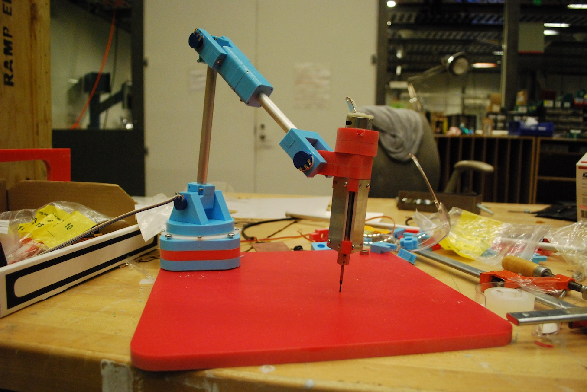
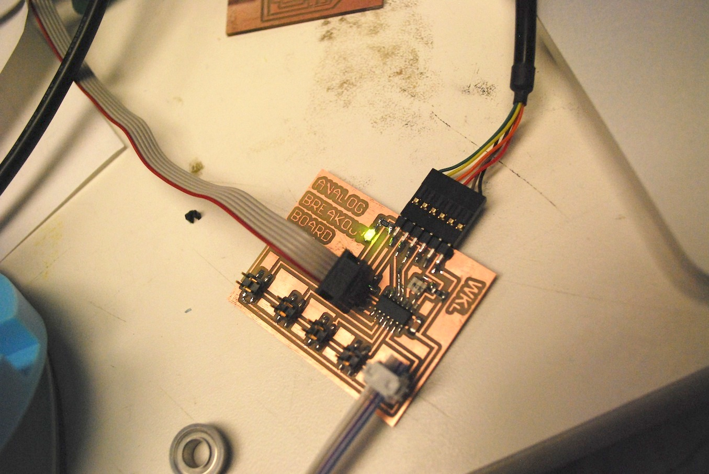

← Will Makes Things.

Handheld CNC, 2012
I am working on making a computer-controlled handheld carving or milling tool. I started this project in Fall 2012 as my final project for my class, How to Make (Almost) Anything (taught by my advisor, Neil Gershenfeld).
This work is inspired in part by previous work in this area (e.g., Amit Zoran's FreeD and Alec Rivers' Handheld CNC Router) and in part by my group's (the Center for Bits and Atoms) recent collaboration with Jeff Koons.
The system consists of a digitizing arm, which senses the tool's current location in 3D space, and a speed-controlled spindle, which slows down as tip of the tool approaches the surface of the desired 3D model. In Fall 2012, I built the digitizing arm shown here:
The arm is primarily made out of HDPE plastic (in fact, it's 1/2" HDPE cutting board material). There are 5 joints in the arm; each joint angle is sensed with a high-precision potentiometer.
The joint angles are read with an Attiny44 microcontroller and sent to the computer via a serial interface.
On the software side, I use Firefly and Grasshopper to read-in the joint angles and calculate the 3D position of the arm. The arm is then rendered in Rhino. Once the tooltip position is calculated, a 3D mesh can be loaded into Rhino and the software script will calculate the distance from tooltip to the mesh surface. This value can then be used to control the speed of the spindle (to slow it down to a stop as it approaches the mesh surface).
Along the way I experimented with a number of side-projects that haven't gotten rolled into the final form yet...
| Capacitive Rotary Position Sensor part 1, part 2. |  |
| Speed Controlled Spindle |  |
| Composite Arm |  |